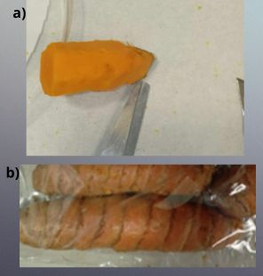
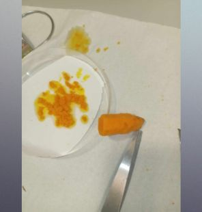
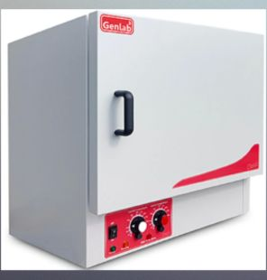
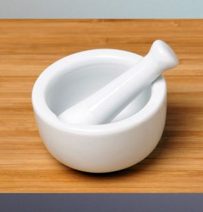

Scroll down to see how TU001 was processed into a powder ready for extraction

Step 1
One of the fresh turmeric roots was grated using a microplane with the skin left on, while another was grated after the skin was removed using a scalpel.
Figure 1a: fresh turmeric root with the skin removed. 1b: fresh turmeric root with skin on

Step 2
The grated fresh turmeric roots were collected into two separate Petri dishes, each containing a 55 mm Whatman® Grade 1 qualitative filter paper, trimmed to fit.
Figure 2: grated fresh turmeric root with skin removed, into a petri dish
Step 3
The Petri dishes were then covered with tin foil, in which holes had been made using a scalpel.

Step 4
One of the fresh turmeric roots was grated using a microplane with the skin left on, while another was grated after the skin was removed using a scalpel.
Figure 3: Genlab oven

Step 5
The Petri dishes were then removed from the oven and the samples were ground into a fine powder using a pestle and mortar.
Figure 4: pestle and mortar
Ready to continue?
Now that you've seen how sample TU001 was processed into a powder
click continue below to see how all the samples were extracted.